Источник питания из блока питания ПК - 3
Компьютерные блоки питания обладают большой нагрузочной способностью, высокой стабилизацией и защитой от короткого замыкания. Основные напряжения для постоянной работы 3,3 В; 5 В; 12 В. Есть ещё выходы, которые могут быть использованы на небольшой ток, это минус 5 В и минус 12 В. Так же можно получить разность напряжений: к примеру, если подключится в к «+5» и «+12», то вы получите напряжение 7 В. Если подключиться к «+3,3» и «+5», то получите 1,7 В.
| № контакта | Обозначение | Цвет провода | Назначение |
|---|---|---|---|
| 1 | 3,3V | Оранжевый | +3,3 VDC |
| 2 | 3,3V | Оранжевый | +3,3 VDC |
| 3 | COM | Черный | Минус-Общий |
| 4 | 5V | Красный | +5 VDC |
| 5 | COM | Черный | Минус-Общий |
| 6 | 5V | Красный | +5 VDC |
| 7 | COM | Черный | Минус-Общий |
| 8 | PWR_OK | Серый | Power Ok (+5V & +3,3V is ok) - логическая единица на этом выводе означает, что напряжения +5V и +3,3V на выходах блока питания стабильны. |
| 9 | 5VSB | Фиолетовый | +5 VDC Standby Voltage (max 2 A ) присутствующее при отключении блока питания . |
| 10 | 12V | Желтый | +12 VDC |
| 11 | 12V | Желтый | +12 VDC |
| 12 | 3,3V | Оранжевый | +3,3 VDC |
| 13 | 3,3V | Оранжевый | +3,3 VDC |
| 14 | -12V | Синий | -12 VDC |
| 15 | COM | Черный | Минус-Общий |
| 16 | PS_ON | Зеленый | Power Supply On (active low) при замыкании с общим проводом блок питания включается, при размыкании - выключается |
| 17 | COM | Черный | Минус-Общий |
| 18 | COM | Черный | Минус-Общий |
| 19 | COM | Черный | Минус-Общий |
| 20 | -5V | Белый | -5 VDC |
| 21 | 5V | Красный | +5 VDC |
| 22 | 5V | Красный | +5 VDC |
| 23 | 5V | Красный | +5 VDC |
| 24 | COM | Черный | Минус-Общий |
Детали
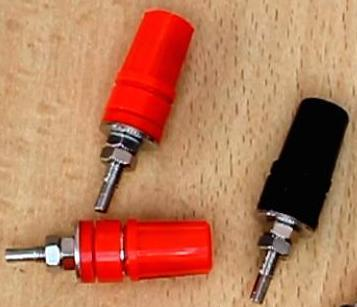 |
Клеммы винтовые. |
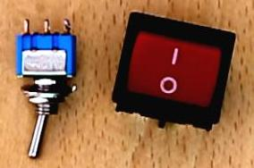 |
Переключатели. Один для сети, второй для управления. |
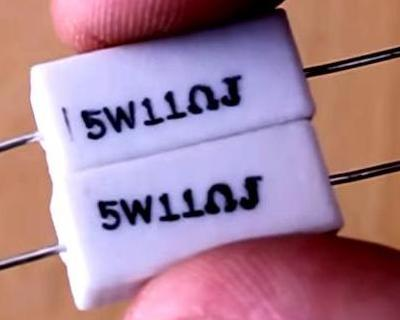 |
Резисторы мощностью 10 Вт и сопротивлением 10 Ом (можно попробовать 20 Ом). Мы будем использовать составные из двух пятиватных резисторов. |
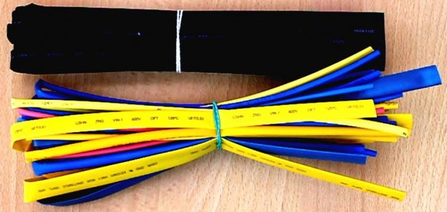 |
Трубка термоусадочная. |
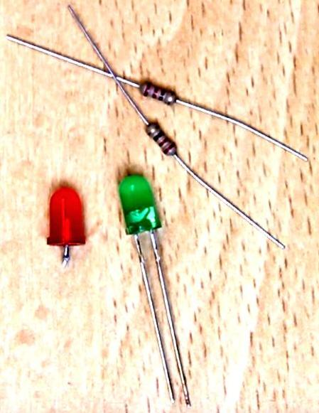 |
Светодиоды с гасящими резисторами на 330 Ом. |
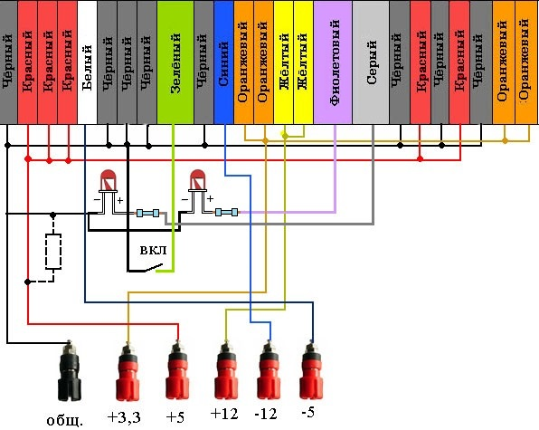
Рис. 1 - Схема доработки блока питания компьютера
Сначало нужно разобрать между собой и соединить провода по цветам. Затем, согласно схемы подключить светодиоды. Первый слева будет показывать наличие питания на выходе после включения. А второй справа будет гореть всегда, пока сетевое напряжение присутствует на блоке.
Подключить переключатель. Он будет запускать основную схему, замыканием зеленого провода на общий. И выключать блок при размыкании.
Также, в зависимости от марки блока, вам понадобится повесить нагрузочный резистор на 5-20 Ом между общим выходом и плюсом пять вольт, иначе блок может не запуститься из-за встроенной защиты. Так же если не заработает, будьте готовы повесить такие резисторы на все напряжения: «+3,3», «+12». Но обычно хватает одного резистора на выход 5 В.
Снимаем верхнюю крышку кожуха.
Откусываем разъемы питания, идущие к материнской плате компьютера и другим устройствам.
Распутываем провода по цветам.
Сверлим отверстия в задней стенке под клеммы. Для точности сначала проходим тонким сверлом, а затем толстым под размер клеммы.
Будьте осторожны, не насыпьте металлическую стружку на плату блока питания.
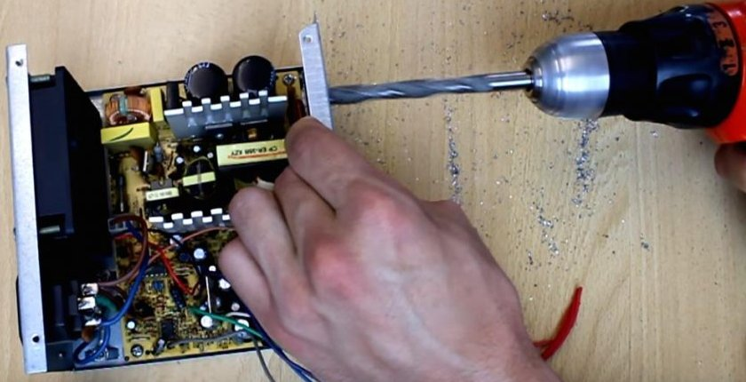
Рис. 2 - Сверление отверстий
Вставляем клеммы и затягиваем.
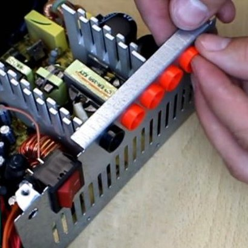
Рис. 3 - Установка клемм
Складываем черные провода, это будет общий, и зачищаем. Затем залуживаем паяльником, одеваем термоусадочную трубку. Припаиваем к клемме и надев трубку на спайку – обдуваем термофеном. Так делаем со всеми проводами (рис. 4). Неиспользуемые провода откусите под корень у платы.
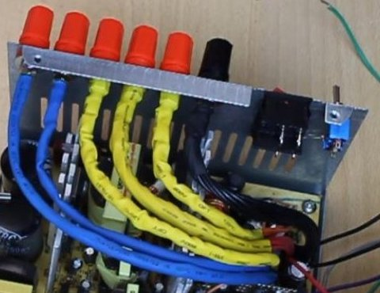
Рис. 4 - Монтаж проводов
Также сверлим отверстия для тумблера и светодиода. Устанавливаем и припаиваем по схеме светодиоды.
Нагрузочные резисторы ставим на монтажную платы и привинчиваем винтами (рис. 5).
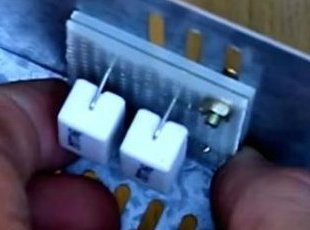
Рис. 5 - Установка нагрузочных резисторов
Закрыв крышку, включаем и проверяем лабораторный блок питания.
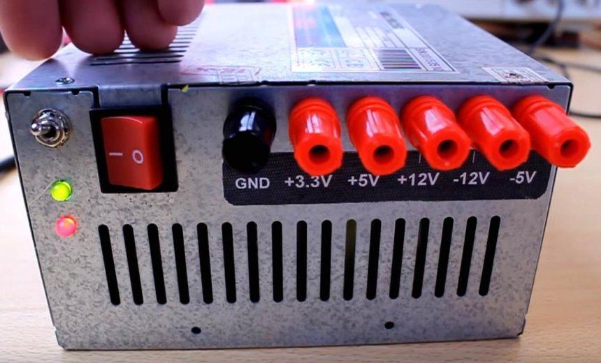
Рис. 6 - Готовый лабораторный блок питания
Чтобы быть уверенным, необходимо измерить выходное напряжение на каждой клемме. В данном устройстве используются два переключателя: один (есть в схеме на рис. 1) запускает работу блока питания, а второй – коммутирует входное напряжение 220 В на вход блока.
Источники
sdelaysam-svoimirukami.ru - Лабораторный источник питания из блока ATX компьютера